Use the Language of Algebra
Use Variables and Algebraic Symbols
Suppose this year Greg is 20 years old and Alex is 23. You know that Alex is 3 years older than Greg. When Greg was 12, Alex was 15. When Greg is 35, Alex will be 38. No matter what Greg’s age is, Alex’s age will always be 3 years more, right? In the language of algebra, we say that Greg’s age and Alex’s age are variables and the 3 is a constant. The ages change (“vary”) but the 3 years between them always stays the same (“constant”). Since Greg’s age and Alex’s age will always differ by 3 years, 3 is the constant.
In algebra, we use letters of the alphabet to represent variables. So if we call Greg’s age g, then we could use to represent Alex’s age. See Table 1.
| Greg’s age | Alex’s age |
|---|---|
The letters used to represent these changing ages are called variables. The letters most commonly used for variables are x, y, a, b, and c.
To write algebraically, we need some operation symbols as well as numbers and variables. There are several types of symbols we will be using.
There are four basic arithmetic operations: addition, subtraction, multiplication, and division. We’ll list the symbols used to indicate these operations in the table below. You’ll probably recognize some of them.
| Operation | Notation | Say: | The result is… |
|---|---|---|---|
| Addition | a plus b | the sum of a and b | |
| Subtraction | a minus b | the difference of a and b | |
| Multiplication | a times b | the product of a and b | |
| Division | a divided by b | the quotient of a and b, a is called the dividend, and b is called the divisor |
We perform these operations on two numbers. When translating from symbolic form to English, or from English to symbolic form, pay attention to the words “of” and “and.”
- The difference of 9 and 2 means subtract 9 and 2, in other words, 9 minus 2, which we write symbolically as
- The product of 4 and 8 means multiply 4 and 8, in other words 4 times 8, which we write symbolically as
In algebra, the cross symbol, is not used to show multiplication because that symbol may cause confusion. Does 3xy mean (‘three times y’) or (three times x times y)? To make it clear, use or parentheses for multiplication.
When two quantities have the same value, we say they are equal and connect them with an equal sign.
On the number line, the numbers get larger as they go from left to right. The number line can be used to explain the symbols “<” and “>.”
The expressions a < b or a > b can be read from left to right or right to left, though in English we usually read from left to right (Table 3). In general, a < b is equivalent to b > a. For example 7 < 11 is equivalent to 11 > 7. And a > b is equivalent to b < a. For example 17 > 4 is equivalent to 4 < 17.
| Inequality Symbols | Words |
|---|---|
| a is not equal to b | |
| a < b | a is less than b |
| a is less than or equal to b | |
| a > b | a is greater than b |
| a is greater than or equal to b |
Translate from algebra into English:
ⓐ ⓑ ⓒ ⓓ
Solution
Solution
ⓐ
17 is less than or equal to 26
ⓑ
8 is not equal to 17 minus 3
ⓒ
12 is greater than 27 divided by 3
ⓓ
y plus 7 is less than 19
Grouping symbols in algebra are much like the commas, colons, and other punctuation marks in English. They help to make clear which expressions are to be kept together and separate from other expressions. We will introduce three types now.
Here are some examples of expressions that include grouping symbols. We will simplify expressions like these later in this section.
What is the difference in English between a phrase and a sentence? A phrase expresses a single thought that is incomplete by itself, but a sentence makes a complete statement. “Running very fast” is a phrase, but “The football player was running very fast” is a sentence. A sentence has a subject and a verb. In algebra, we have expressions and equations.
An expression is like an English phrase. Here are some examples of expressions:
| Expression | Words | English Phrase |
|---|---|---|
| 3 plus 5 | the sum of three and five | |
| n minus one | the difference of n and one | |
| 6 times 7 | the product of six and seven | |
| x divided by y | the quotient of x and y |
Notice that the English phrases do not form a complete sentence because the phrase does not have a verb.
An equation is two expressions linked with an equal sign. When you read the words the symbols represent in an equation, you have a complete sentence in English. The equal sign gives the verb.
Here are some examples of equations.
| Equation | English Sentence |
|---|---|
| The sum of three and five is equal to eight. | |
| n minus one equals fourteen. | |
| The product of six and seven is equal to forty-two. | |
| x is equal to fifty-three. | |
| y plus nine is equal to two y minus three. |
Determine if each is an expression or an equation:
ⓐ ⓑ ⓒ ⓓ
Solution
Solution
| ⓐ | This is an equation—two expressions are connected with an equal sign. |
| ⓑ | This is an expression—no equal sign. |
| ⓒ | This is an expression—no equal sign. |
| ⓓ | This is an equation—two expressions are connected with an equal sign. |
Suppose we need to multiply 2 nine times. We could write this as This is tedious and it can be hard to keep track of all those 2s, so we use exponents. We write as and as In expressions such as the 2 is called the base and the 3 is called the exponent. The exponent tells us how many times we need to multiply the base.
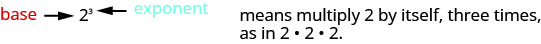
We read as “two to the third power” or “two cubed.”
We say is in exponential notation and is in expanded notation.
While we read as “a to the power,” we usually read:
- “a squared”
- “a cubed”
We’ll see later why and have special names.
Table 7 shows how we read some expressions with exponents.
| Expression | In Words |
|---|---|
| 7 to the second power or 7 squared | |
| 5 to the third power or 5 cubed | |
| 9 to the fourth power | |
| to the fifth power |
Simplify:
Solution
Solution
| Expand the expression. | |
| Multiply left to right. | |
| Multiply. | |
| Multiply. | 81 |
Simplify Expressions Using the Order of Operations
To simplify an expression means to do all the math possible. For example, to simplify we’d first multiply to get 8 and then add the 1 to get 9. A good habit to develop is to work down the page, writing each step of the process below the previous step. The example just described would look like this:
By not using an equal sign when you simplify an expression, you may avoid confusing expressions with equations.
We’ve introduced most of the symbols and notation used in algebra, but now we need to clarify the order of operations. Otherwise, expressions may have different meanings, and they may result in different values. For example, consider the expression:
If you simplify this expression, what do you get?
Some students say 49,
Others say 25,
Imagine the confusion in our banking system if every problem had several different correct answers!
The same expression should give the same result. So mathematicians early on established some guidelines that are called the Order of Operations.
Students often ask, “How will I remember the order?” Here is a way to help you remember: Take the first letter of each key word and substitute the silly phrase: “Please Excuse My Dear Aunt Sally.”
It’s good that “My Dear” goes together, as this reminds us that multiplication and division have equal priority. We do not always do multiplication before division or always do division before multiplication. We do them in order from left to right.
Similarly, “Aunt Sally” goes together and so reminds us that addition and subtraction also have equal priority and we do them in order from left to right.
Let’s try an example.
Simplify: ⓐ ⓑ
Solution
Solution
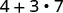 |
|
| Are there any parentheses? No. | |
| Are there any exponents? No. | |
| Is there any multiplication or division? Yes. | |
| Multiply first. |  |
| Add. |  |
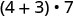 |
|
| Are there any parentheses? Yes. | 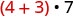 |
| Simplify inside the parentheses. |  |
| Are there any exponents? No. | |
| Is there any multiplication or division? Yes. | |
| Multiply. |  |
Simplify:
Solution
Solution
| Parentheses? Yes, subtract first. |

|
| Exponents? No. | |
| Multiplication or division? Yes. |  |
| Divide first because we multiply and divide left to right. |  |
| Any other multiplication or division? Yes. | |
| Multiply. |  |
| Any other multiplication or division? No. | |
| Any addition or subtraction? Yes. |  |
When there are multiple grouping symbols, we simplify the innermost parentheses first and work outward.
Simplify:
Solution
Solution
![A mathematical expression is displayed, featuring numbers and operations including addition, subtraction, exponentiation, and multiplication, organized with parentheses and brackets: 5 + 2^3 + 3[6 - 3(4 - 2)].](../../media/CNX_ElemAlg_Figure_01_02_008a_img_new.jpg) |
|
| Are there any parentheses (or other grouping symbol)? Yes. | |
| Focus on the parentheses that are inside the brackets. | ![A mathematical problem displaying an arithmetic expression: 5 + 2^3 + 3[6 - 3(4 - 2)]. The subtraction within the innermost parentheses, '4 - 2', is highlighted in red.](../../media/CNX_ElemAlg_Figure_01_02_008b_img_new.jpg) |
| Subtract. | ![A mathematical expression reads 5 + 2^3 + 3[6 - 3(2)]. The '3(2)' part is highlighted in red, indicating a specific focus or step in solving the problem.](../../media/CNX_ElemAlg_Figure_01_02_008c_img_new.jpg) |
| Continue inside the brackets and multiply. |  |
| Continue inside the brackets and subtract. | ![A mathematical expression showing '5 + 2^3 + 3[0]'. The number 0 is highlighted in red within the brackets, indicating a specific element or value.](../../media/CNX_ElemAlg_Figure_01_02_008e_img_new.jpg) |
| The expression inside the brackets requires no further simplification. | |
| Are there any exponents? Yes. | 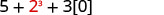 |
| Simplify exponents. | ![A mathematical expression '5 + 8 + 3[0]' is displayed on a white background, with the '3[0]' part highlighted in red text, suggesting a specific focus on that segment of the equation.](../../media/CNX_ElemAlg_Figure_01_02_008g_img_new.jpg) |
| Is there any multiplication or division? Yes. | |
| Multiply. | |
| Is there any addition or subtraction? Yes. | |
| Add. |  |
| Add. |  |
Evaluate an Expression
In the last few examples, we simplified expressions using the order of operations. Now we’ll evaluate some expressions—again following the order of operations. To evaluate an expression means to find the value of the expression when the variable is replaced by a given number.
To evaluate an expression, substitute that number for the variable in the expression and then simplify the expression.
Evaluate when ⓐ and ⓑ
Solution
Solution
 |
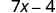 |
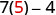 |
|
| Multiply. |  |
| Subtract. |
 |
 |
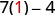 |
|
| Multiply. |  |
| Subtract. |  |
Evaluate the following for when ⓐ ⓑ
Solution
Solution
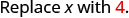 |
 |
| Use definition of exponent. | |
| Simplify. |
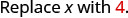 |
 |
| Use definition of exponent. | |
| Simplify. |
Evaluate when
Solution
Solution
 |
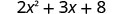 |
| Follow the order of operations. | |
Identify and Combine Like Terms
Algebraic expressions are made up of terms. A term is a constant, or the product of a constant and one or more variables.
Examples of terms are
The constant that multiplies the variable is called the coefficient.
Think of the coefficient as the number in front of the variable. The coefficient of the term 3x is 3. When we write x, the coefficient is 1, since
Identify the coefficient of each term: ⓐ 14y ⓑ ⓒ a.
Solution
Solution
ⓐ The coefficient of 14y is 14.
ⓑ The coefficient of is 15.
ⓒ The coefficient of a is 1 since
Some terms share common traits. Look at the following 6 terms. Which ones seem to have traits in common?
The 7 and the 4 are both constant terms.
The 5x and the 3x are both terms with x.
The and the are both terms with
When two terms are constants or have the same variable and exponent, we say they are like terms.
- 7 and 4 are like terms.
- 5x and 3x are like terms.
- and are like terms.
Identify the like terms: 14, 23, 9x,
Solution
Solution
and are like terms because both have the variable and the exponent match.
and are like terms because both have the variable and the exponent match.
14 and 23 are like terms because both are constants.
There is no other term like 9x.
Adding or subtracting terms forms an expression. In the expression from Example 9, the three terms are and 8.
Identify the terms in each expression.
- ⓐ
- ⓑ
Solution
Solution
-
ⓐ The terms of are 7x, and 12.
- ⓑ The terms of are 8x and 3y.
If there are like terms in an expression, you can simplify the expression by combining the like terms. What do you think would simplify to? If you thought 12x, you would be right!
Add the coefficients and keep the same variable. It doesn’t matter what x is—if you have 4 of something and add 7 more of the same thing and then add 1 more, the result is 12 of them. For example, 4 oranges plus 7 oranges plus 1 orange is 12 oranges. We will discuss the mathematical properties behind this later.
Simplify:
Add the coefficients. 12x
How To Combine Like Terms
Simplify:
Solution
Solution
![Three lines of instructions are listed in a column on the left side of the image while four algebraic expressions are listed on the right. The first line of instruction on the left says: “Step 1. Identify like terms.” Across from step 1 in the right column is the algebraic expression: 2x squared plus 3x plus 7 plus x squared plus 4x plus 5. One line down on the right, the same algebraic expression is repeated, except each of the terms appears in one of three colors to illustrate that these are like terms: 2x squared and x squared appear as red, illustrating that these are like terms; 3x and 4x appear as blue, illustrating that these are also like terms; 7 and 5 appear as green, illustrating that these are like terms as well.](../../media/CNX_ElemAlg_Figure_01_02_014a_new.jpg)


Translate an English Phrase to an Algebraic Expression
In the last section, we listed many operation symbols that are used in algebra, then we translated expressions and equations into English phrases and sentences. Now we’ll reverse the process. We’ll translate English phrases into algebraic expressions. The symbols and variables we’ve talked about will help us do that. Table 18 summarizes them.
| Operation | Phrase | Expression |
|---|---|---|
| Addition |
a plus b the sum of and b increased by b b more than the total of and b b added to |
|
| Subtraction |
minus b the difference of and b decreased by b b less than b subtracted from |
|
| Multiplication |
times b the product of and b twice |
2a |
| Division |
divided by b the quotient of and b the ratio of and b b divided into |
Look closely at these phrases using the four operations:
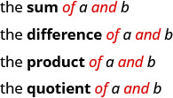
Each phrase tells us to operate on two numbers. Look for the words of and and to find the numbers.
Translate each English phrase into an algebraic expression: ⓐ the difference of and ⓑ the quotient of and
Solution
Solution
-
ⓐ The key word is difference, which tells us the operation is subtraction. Look for the words of and and to find the numbers to subtract.

- ⓑ The key word is “quotient,” which tells us the operation is division.

This can also be written
How old will you be in eight years? What age is eight more years than your age now? Did you add 8 to your present age? Eight “more than” means 8 added to your present age. How old were you seven years ago? This is 7 years less than your age now. You subtract 7 from your present age. Seven “less than” means 7 subtracted from your present age.
Translate the English phrase into an algebraic expression: ⓐ Seventeen more than y ⓑ Nine less than
Solution
Solution
-
ⓐ The key words are more than. They tell us the operation is addition. More than means “added to.”
-
ⓑ The key words are less than. They tell us to subtract. Less than means “subtracted from.”
Translate the English phrase into an algebraic expression: ⓐ five times the sum of m and n ⓑ the sum of five times m and n.
Solution
Solution
There are two operation words—times tells us to multiply and sum tells us to add.
-
ⓐ Because we are multiplying 5 times the sum we need parentheses around the sum of m and n, This forces us to determine the sum first. (Remember the order of operations.)
-
ⓑ To take a sum, we look for the words “of” and “and” to see what is being added. Here we are taking the sum of five times m and n.
Later in this course, we’ll apply our skills in algebra to solving applications. The first step will be to translate an English phrase to an algebraic expression. We’ll see how to do this in the next two examples.
The width of a rectangle is 6 less than the length. Let l represent the length of the rectangle. Write an expression for the width of the rectangle.
Solution
Solution
| Write a phrase about the width of the rectangle. | 6 less than the length |
| Substitute for "the length." | 6 less than |
| Rewrite "less than" as "subtracted from." | 6 subtracted from |
| Translate the phrase into algebra. |
June has dimes and quarters in her purse. The number of dimes is three less than four times the number of quarters. Let q represent the number of quarters. Write an expression for the number of dimes.
Solution
Solution
| Write a phrase about the number of dimes. | three less than four times the number of quarters |
| Substitute for the number of quarters. | 3 less than 4 times |
| Translate "4 times ." | 3 less than |
| Translate the phase into algebra. |
Key Concepts
-
Notation The result is…
-
Inequality
-
Inequality Symbols Words
-
Grouping Symbols
- Parentheses
- Brackets
- Braces
-
Exponential Notation
- means multiply by itself, times. The expression is read to the power.
-
Order of Operations: When simplifying mathematical expressions perform the operations in the following order:
- Parentheses and other Grouping Symbols: Simplify all expressions inside the parentheses or other grouping symbols, working on the innermost parentheses first.
- Exponents: Simplify all expressions with exponents.
- Multiplication and Division: Perform all multiplication and division in order from left to right. These operations have equal priority.
- Addition and Subtraction: Perform all addition and subtraction in order from left to right. These operations have equal priority.
-
Combine Like Terms
- Identify like terms.
- Rearrange the expression so like terms are together.
- Add or subtract the coefficients and keep the same variable for each group of like terms.
Practice Makes Perfect
Use Variables and Algebraic Symbols
In the following exercises, translate from algebra to English.
Solution
16 minus 9, the difference of sixteen and nine
Solution
28 divided by 4, the quotient of twenty-eight and four
Solution
2 times 7, the product of two and seven
Solution
fourteen is less than twenty-one
Solution
thirty-six is greater than or equal to nineteen
Solution
y minus 1 is greater than 6, the difference of y and one is greater than six
Solution
2 is less than or equal to 18 divided by 6; 2 is less than or equal to the quotient of eighteen and six
In the following exercises, determine if each is an expression or an equation.
Solution
equation
Solution
expression
Solution
expression
Simplify Expressions Using the Order of Operations
In the following exercises, simplify each expression.
Solution
125
Solution
256
In the following exercises, simplify using the order of operations.
ⓐ ⓑ
Solution
ⓐ 43 ⓑ 55
ⓐ ⓑ
Solution
5
Solution
34
Solution
58
Solution
6
Solution
4
Solution
35
Solution
58
Solution
149
Solution
50
Evaluate an Expression
In the following exercises, evaluate the following expressions.
when
Solution
22
when
when
Solution
144
when
when
Solution
32
when
when
Solution
21
when
when
Solution
9
when
when
Solution
73
when
when
Solution
54
when
Simplify Expressions by Combining Like Terms
In the following exercises, identify the coefficient of each term.
8a
Solution
8
13m
Solution
5
In the following exercises, identify the like terms.
Solution
Solution
In the following exercises, identify the terms in each expression.
Solution
Solution
In the following exercises, simplify the following expressions by combining like terms.
Solution
13x
Solution
7c
Solution
Solution
Solution
Translate an English Phrase to an Algebraic Expression
In the following exercises, translate the phrases into algebraic expressions.
the difference of 14 and 9
Solution
the difference of 19 and 8
the product of 9 and 7
Solution
the product of 8 and 7
the quotient of 36 and 9
Solution
the quotient of 42 and 7
the sum of 8x and 3x
Solution
the sum of 13x and 3x
the quotient of y and 3
Solution
the quotient of y and 8
eight times the difference of y and nine
Solution
seven times the difference of y and one
Eric has rock and classical CDs in his car. The number of rock CDs is 3 more than the number of classical CDs. Let c represent the number of classical CDs. Write an expression for the number of rock CDs.
Solution
The number of girls in a second-grade class is 4 less than the number of boys. Let b represent the number of boys. Write an expression for the number of girls.
Greg has nickels and pennies in his pocket. The number of pennies is seven less than twice the number of nickels. Let represent the number of nickels. Write an expression for the number of pennies.
Solution
Jeannette has $5 and $10 bills in her wallet. The number of fives is three more than six times the number of tens. Let t represent the number of tens. Write an expression for the number of fives.
Everyday Math
Car insurance Justin’s car insurance has a $750 deductible per incident. This means that he pays $750 and his insurance company will pay all costs beyond $750. If Justin files a claim for $2,100.
- ⓐ how much will he pay?
- ⓑ how much will his insurance company pay?
Solution
ⓐ $750 ⓑ $1,350
Home insurance Armando’s home insurance has a $2,500 deductible per incident. This means that he pays $2,500 and the insurance company will pay all costs beyond $2,500. If Armando files a claim for $19,400.
- ⓐ how much will he pay?
- ⓑ how much will the insurance company pay?
Writing Exercises
Explain the difference between an expression and an equation.
Solution
Answers may vary
Why is it important to use the order of operations to simplify an expression?
Explain how you identify the like terms in the expression
Solution
Answers may vary
Explain the difference between the phrases “4 times the sum of x and y” and “the sum of 4 times x and y.”
Self Check
ⓐ Use this checklist to evaluate your mastery of the objectives of this section.
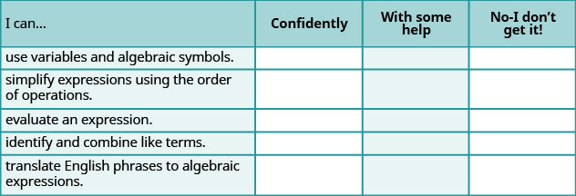
ⓑ After reviewing this checklist, what will you do to become confident for all objectives?